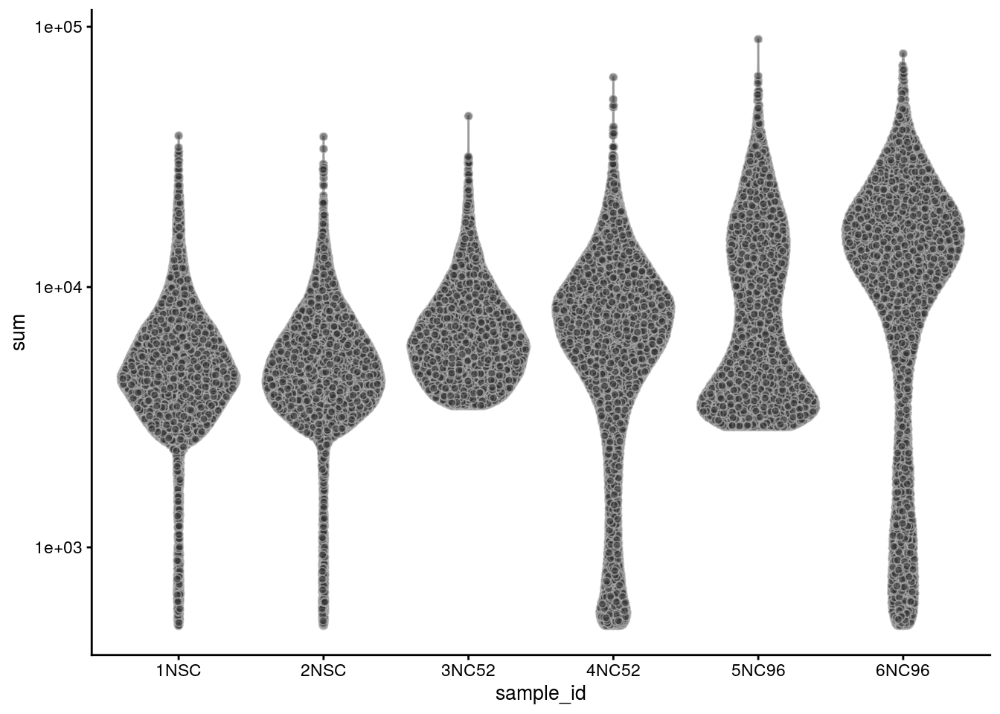
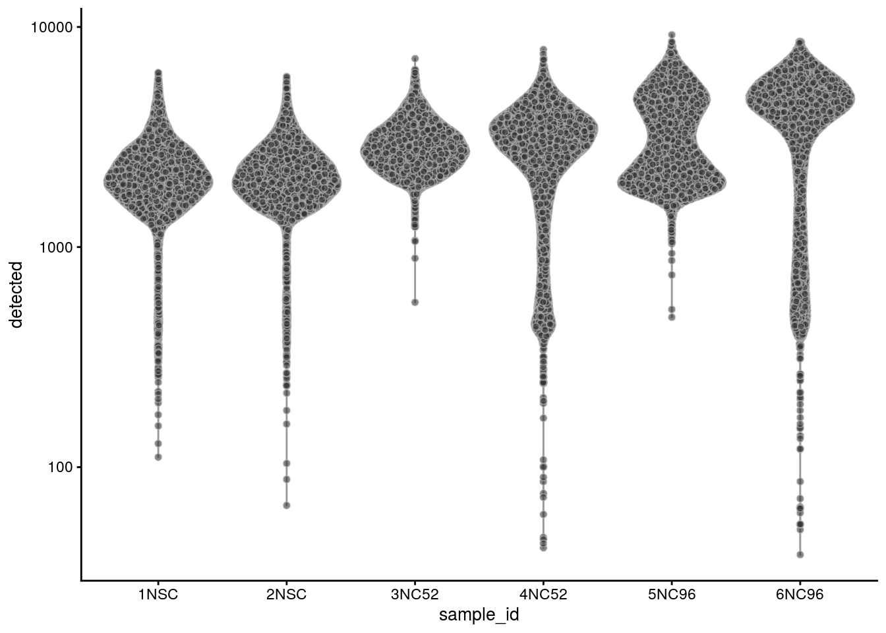
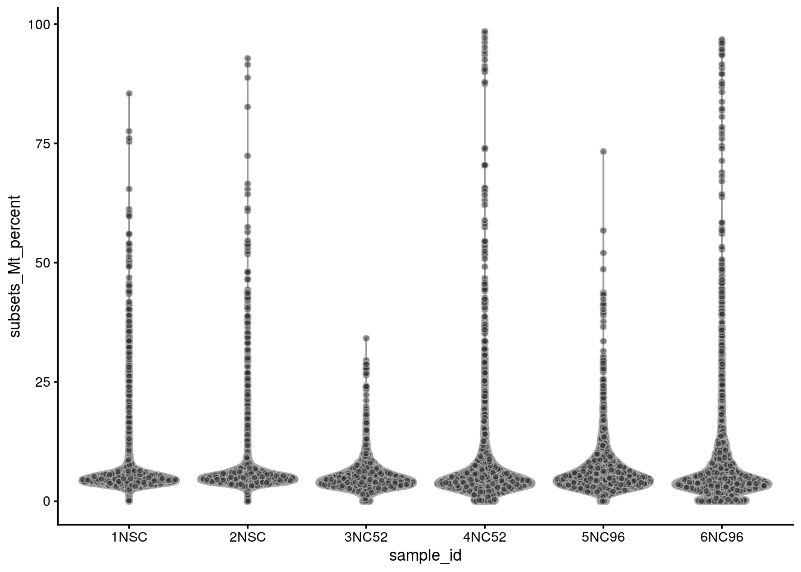
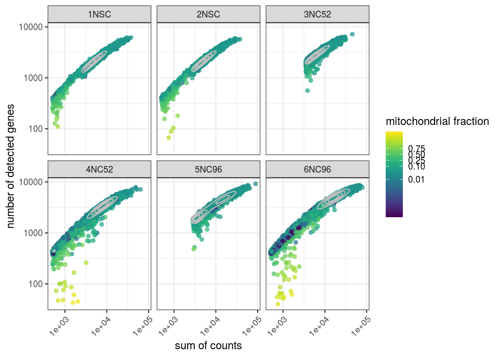
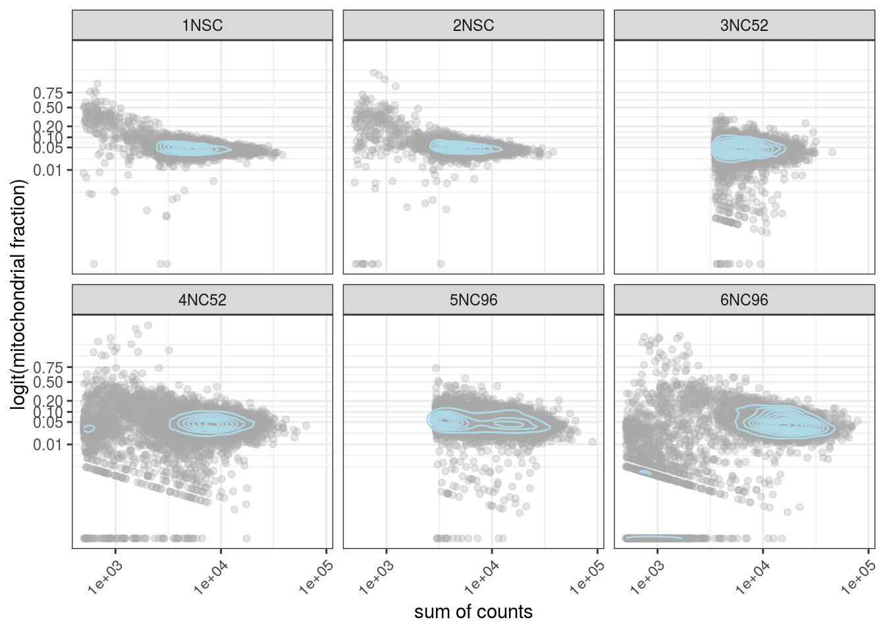

Last updated: 2020-05-26
Checks: 6 1
Knit directory: neural_scRNAseq/
This reproducible R Markdown analysis was created with workflowr (version 1.6.2). The Checks tab describes the reproducibility checks that were applied when the results were created. The Past versions tab lists the development history.
Great! Since the R Markdown file has been committed to the Git repository, you know the exact version of the code that produced these results.
Great job! The global environment was empty. Objects defined in the global environment can affect the analysis in your R Markdown file in unknown ways. For reproduciblity it’s best to always run the code in an empty environment.
The command set.seed(20200522) was run prior to running the code in the R Markdown file. Setting a seed ensures that any results that rely on randomness, e.g. subsampling or permutations, are reproducible.
Great job! Recording the operating system, R version, and package versions is critical for reproducibility.
To ensure reproducibility of the results, delete the cache directory 02-quality_control_cache and re-run the analysis. To have workflowr automatically delete the cache directory prior to building the file, set delete_cache = TRUE when running wflow_build() or wflow_publish().
Great job! Using relative paths to the files within your workflowr project makes it easier to run your code on other machines.
Great! You are using Git for version control. Tracking code development and connecting the code version to the results is critical for reproducibility.
The results in this page were generated with repository version 24db792. See the Past versions tab to see a history of the changes made to the R Markdown and HTML files.
Note that you need to be careful to ensure that all relevant files for the analysis have been committed to Git prior to generating the results (you can use wflow_publish or wflow_git_commit). workflowr only checks the R Markdown file, but you know if there are other scripts or data files that it depends on. Below is the status of the Git repository when the results were generated:
Ignored files:
Ignored: .DS_Store
Ignored: .Rhistory
Ignored: .Rproj.user/
Ignored: ._.DS_Store
Ignored: .__workflowr.yml
Ignored: ._neural_scRNAseq.Rproj
Ignored: analysis/.DS_Store
Ignored: analysis/._.DS_Store
Ignored: analysis/._01-preprocessing.Rmd
Ignored: analysis/._01-preprocessing.html
Ignored: analysis/01-preprocessing_cache/
Ignored: analysis/02-quality_control_cache/
Ignored: data/.DS_Store
Ignored: data/._.DS_Store
Ignored: data/._metadata.csv
Ignored: data/._metadata.xlsx
Ignored: data/.smbdeleteAAA17ed8b4b
Ignored: data/data_sushi/
Ignored: data/metadata.csv
Ignored: data/metadata.xlsx
Untracked files:
Untracked: output/sce_01_preprocessing.rds
Untracked: output/sce_preprocessing.rds
Unstaged changes:
Modified: _workflowr.yml
Note that any generated files, e.g. HTML, png, CSS, etc., are not included in this status report because it is ok for generated content to have uncommitted changes.
These are the previous versions of the repository in which changes were made to the R Markdown (analysis/02-quality_control.Rmd) and HTML (docs/02-quality_control.html) files. If you’ve configured a remote Git repository (see ?wflow_git_remote), click on the hyperlinks in the table below to view the files as they were in that past version.
| File | Version | Author | Date | Message |
|---|---|---|---|---|
| Rmd | 24db792 | khembach | 2020-05-26 | Preprocessing and quality control plots |
library(scater)
library(scales)
library(viridis)sce <- readRDS(file.path("output", "sce_01_preprocessing.rds"))We compute cell-level QC.
(mito <- grep("MT-", rownames(sce), value = TRUE)) [1] "ENSG00000210049.MT-TF" "ENSG00000211459.MT-RNR1"
[3] "ENSG00000210077.MT-TV" "ENSG00000210082.MT-RNR2"
[5] "ENSG00000209082.MT-TL1" "ENSG00000198888.MT-ND1"
[7] "ENSG00000210100.MT-TI" "ENSG00000210107.MT-TQ"
[9] "ENSG00000210112.MT-TM" "ENSG00000198763.MT-ND2"
[11] "ENSG00000210117.MT-TW" "ENSG00000210127.MT-TA"
[13] "ENSG00000210135.MT-TN" "ENSG00000210140.MT-TC"
[15] "ENSG00000210144.MT-TY" "ENSG00000198804.MT-CO1"
[17] "ENSG00000210151.MT-TS1" "ENSG00000210154.MT-TD"
[19] "ENSG00000198712.MT-CO2" "ENSG00000210156.MT-TK"
[21] "ENSG00000228253.MT-ATP8" "ENSG00000198899.MT-ATP6"
[23] "ENSG00000198938.MT-CO3" "ENSG00000210164.MT-TG"
[25] "ENSG00000198840.MT-ND3" "ENSG00000210174.MT-TR"
[27] "ENSG00000212907.MT-ND4L" "ENSG00000198886.MT-ND4"
[29] "ENSG00000210176.MT-TH" "ENSG00000210184.MT-TS2"
[31] "ENSG00000210191.MT-TL2" "ENSG00000198786.MT-ND5"
[33] "ENSG00000198695.MT-ND6" "ENSG00000210194.MT-TE"
[35] "ENSG00000198727.MT-CYB" "ENSG00000210195.MT-TT"
[37] "ENSG00000210196.MT-TP" sce <- addPerCellQC(sce, subsets = list(Mt = mito))
# we compute the fraction of mitochondrial genes and the logit of it
sce$subsets_Mt_fraction <- (sce$subsets_Mt_percent + 0.001) /100
sce$subsets_Mt_fraction_logit <- qlogis(sce$subsets_Mt_fraction + 0.001)
# library size
summary(sce$sum) Min. 1st Qu. Median Mean 3rd Qu. Max.
500 2377 4624 6152 7688 78841 # number of detected genes per cell
summary(sce$detected) Min. 1st Qu. Median Mean 3rd Qu. Max.
32 1393 2147 2362 3100 8593 # percentage of counts that come from mitochondrial genes:
summary(sce$subsets_Mt_percent) Min. 1st Qu. Median Mean 3rd Qu. Max.
0.000 3.694 4.850 5.914 6.584 98.483 The number of counts per cell:
plotColData(sce, x = "sample_id", y="sum")
The number of genes:
plotColData(sce, x = "sample_id", y="detected")
The percentage of mitochondrial genes:
plotColData(sce, x = "sample_id", y="subsets_Mt_percent")
We plot the total number of counts against the number of detected genes and color by the fraction of mitochondrial genes:
# plotColData(sce, x = "sum", y="detected", colour_by="subsets_Mt_fraction_logit",
# other_fields = "sample_id") +
# scale_x_log10() +
# scale_y_log10() +
# facet_wrap(~sample_id) +
# theme(axis.text.x = element_text(angle = 45, hjust = 1))
cd <- data.frame(colData(sce))
ggplot(cd, aes(x = sum, y=detected, color = subsets_Mt_fraction)) +
geom_point(alpha = 0.7) +
geom_density_2d(color = "grey", bins = 6) +
scale_x_log10() +
scale_y_log10() +
facet_wrap(~sample_id) +
theme_bw() +
theme(axis.text.x = element_text(angle = 45, hjust = 1)) +
xlab("sum of counts") +
ylab("number of detected genes") +
labs(color = "mitochondrial fraction") +
scale_color_viridis(trans = "logit", breaks = c(0.01, 0.1, 0.25, 0.5, 0.75))
We plot the total number of counts against the mitochondrial content. Well-behaved cells should have many expressed genes and a low fraction of mitochondrial genes. High mitochondrial content indicates empty or damaged cells.
ggplot(cd, aes(x = sum, y=subsets_Mt_fraction)) +
geom_point(color = "darkgrey", alpha = 0.3) +
geom_density_2d(color = "lightblue") +
scale_x_log10() +
scale_y_continuous(trans='logit', breaks=c(0.01, 0.05, 0.1, 0.2, 0.5, 0.75)) +
facet_wrap(~sample_id) +
theme_bw() +
theme(axis.text.x = element_text(angle = 45, hjust = 1)) +
xlab("sum of counts") +
ylab("logit(mitochondrial fraction)")
We plot the top 20 genes with highest expression. Mitochondrial genes, actin, ribosomal proteins or MALAT1 are examples of genes that are expected to have very high expression.
plotHighestExprs(sce, n = 20)
sessionInfo()R version 4.0.0 (2020-04-24)
Platform: x86_64-pc-linux-gnu (64-bit)
Running under: Ubuntu 16.04.6 LTS
Matrix products: default
BLAS: /usr/local/R/R-4.0.0/lib/libRblas.so
LAPACK: /usr/local/R/R-4.0.0/lib/libRlapack.so
locale:
[1] LC_CTYPE=en_US.UTF-8 LC_NUMERIC=C
[3] LC_TIME=en_US.UTF-8 LC_COLLATE=en_US.UTF-8
[5] LC_MONETARY=en_US.UTF-8 LC_MESSAGES=en_US.UTF-8
[7] LC_PAPER=en_US.UTF-8 LC_NAME=C
[9] LC_ADDRESS=C LC_TELEPHONE=C
[11] LC_MEASUREMENT=en_US.UTF-8 LC_IDENTIFICATION=C
attached base packages:
[1] stats4 parallel stats graphics grDevices utils datasets
[8] methods base
other attached packages:
[1] HDF5Array_1.16.0 rhdf5_2.32.0
[3] scater_1.16.0 ggplot2_3.3.0
[5] SingleCellExperiment_1.10.1 SummarizedExperiment_1.18.1
[7] DelayedArray_0.14.0 matrixStats_0.56.0
[9] Biobase_2.48.0 GenomicRanges_1.40.0
[11] GenomeInfoDb_1.24.0 IRanges_2.22.2
[13] S4Vectors_0.26.1 BiocGenerics_0.34.0
[15] workflowr_1.6.2
loaded via a namespace (and not attached):
[1] Rcpp_1.0.4.6 rsvd_1.0.3
[3] lattice_0.20-41 assertthat_0.2.1
[5] rprojroot_1.3-2 digest_0.6.25
[7] R6_2.4.1 backports_1.1.7
[9] evaluate_0.14 pillar_1.4.4
[11] zlibbioc_1.34.0 rlang_0.4.6
[13] irlba_2.3.3 Matrix_1.2-18
[15] rmarkdown_2.1 labeling_0.3
[17] BiocNeighbors_1.6.0 BiocParallel_1.22.0
[19] stringr_1.4.0 beachmat_2.4.0
[21] RCurl_1.98-1.2 munsell_0.5.0
[23] compiler_4.0.0 httpuv_1.5.2
[25] vipor_0.4.5 BiocSingular_1.4.0
[27] xfun_0.14 pkgconfig_2.0.3
[29] ggbeeswarm_0.6.0 htmltools_0.4.0
[31] tidyselect_1.1.0 gridExtra_2.3
[33] tibble_3.0.1 GenomeInfoDbData_1.2.3
[35] codetools_0.2-16 viridisLite_0.3.0
[37] crayon_1.3.4 dplyr_0.8.5
[39] withr_2.2.0 later_1.0.0
[41] bitops_1.0-6 grid_4.0.0
[43] gtable_0.3.0 lifecycle_0.2.0
[45] git2r_0.27.1 magrittr_1.5
[47] scales_1.1.1 stringi_1.4.6
[49] farver_2.0.3 XVector_0.28.0
[51] viridis_0.5.1 fs_1.4.1
[53] promises_1.1.0 DelayedMatrixStats_1.10.0
[55] ellipsis_0.3.1 vctrs_0.3.0
[57] Rhdf5lib_1.10.0 tools_4.0.0
[59] glue_1.4.1 beeswarm_0.2.3
[61] purrr_0.3.4 yaml_2.2.1
[63] colorspace_1.4-1 knitr_1.28